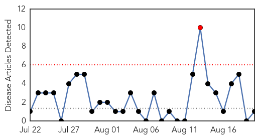
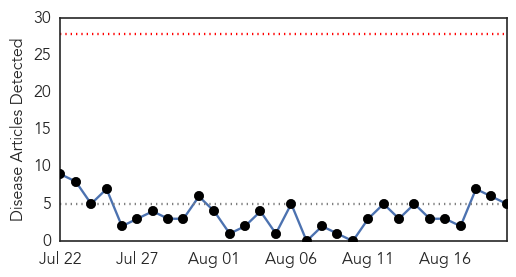
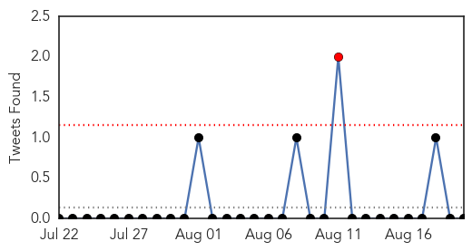
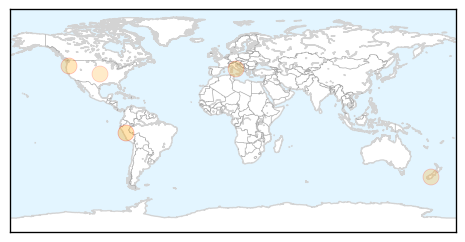
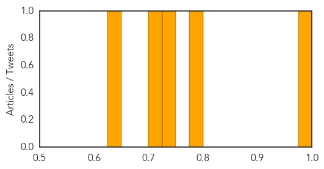

Pertussis
30-Day Web Trend
1 alerts, 0 warnings

30-Day Twitter Trend
0 alerts, 0 warnings

Article Locations

Article Confidences

Top Articles:
Top Tweets:
-
No tweets found for Aug 20, 2014
Influenza
30-Day Web Trend
0 alerts, 0 warnings

30-Day Twitter Trend
1 alerts, 0 warnings

Article Locations
Article Confidences
Top Articles:
- 0.977
- News Scan for Aug 20, 2014
- 0.791
- Why Aren't Pregnant Women Getting Their Flu Vaccine?
- 0.744
- FAO to Global Experts: Strengthen Animal Health Weak Link to Prevent Human Infectious Disease
- 0.705
- Hand sanitizers not shown to cut school absences
- 0.634
- Protein Sciences Lands Distribution Deal For Flublok, Its Latest Flu Vaccine
Top Tweets:
-
No tweets found for Aug 20, 2014